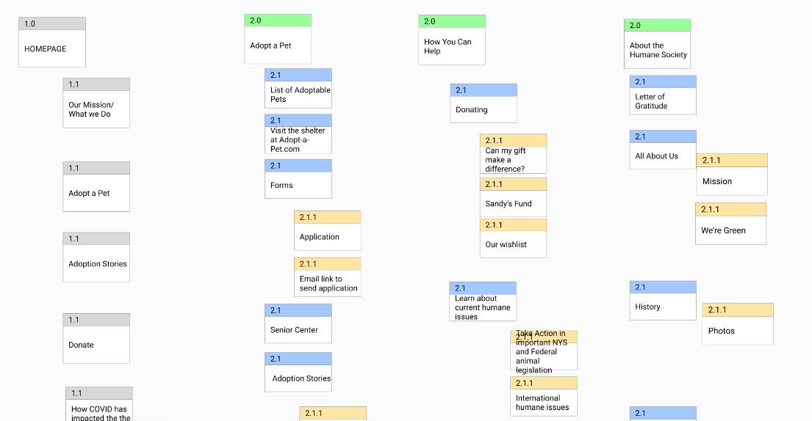

The Humane Society of New York has a website that is not easy for users to navigate. Primary problems include the site being text heacy and not well organized which can overwhelm users. There is also no mobile version, instead using the regular desktop layout with elements smashed together to fit a mobile screen.
The Challenge:
Finding what information present on the site is the most important to present to users. What is the primary purpose of this site? What kind of emotion and experience would the users of this site need to experience for this site to succeed in its purpose?
The Solution:
We took a mobile-first design approach, ensuring that the mobile version of the site is polished, clean, and user-friendly. We prioritized present information, narrowed the scope of the site to adoptions, and redesigned the website to be more friendly and inviting to users as well as organized and easy to navigate.
Understanding The Users
Research Plan:
In thinking about the users of the site goals in relation to the goals of the Humane Society, we felt there were three essential questions that we needed answered.
1. Discover visitor motivation
2. Understand who is looing to adopt and why
3. Understand how and why animals end up / come to the shelter
We dove head first into these inquiries and asked 5 interviewees a series of questions that gave us a better understanding of user motivations and goals when visiting the site. We also sent out a survey of pet owners asking eight additional questions regarding motivation when adopting versus buying animals, planning processes when preparing for a new animal, and demographics of pet owners. We had 20 respondents to this survey.
We then categorized and sorted the responses of all interviewees and survey respondents to find any commonalities among users.
Research Results:
In rooting through the results of our interviews and survey results we struggled finding many solid common connections between individual results. It seemed that pet owners found their pets in various ways and adopted or bought their animals for various reasons. In truth, we anticipated far more commonality between users than we saw.
We moved forward finding slightly broader commonalities in order to group results as best we could to construct a solid user persona to have in mind when brainstorming features and functional prioritization. In the end, we were able to understand the primary user types for the site, therefore allowing us to brainstorm and prioritize accordingly.
Feature Prioritization:
The group used the “I like...” “I wish...” “I wonder...” method to brainstorm new feature ideas and prioritize current ones. We then voted anonymously on the features we felt would be the most important for our user base and prioritized them on a matrix of complexity and user impact. The bottom left being the lowest complexity and lowest impact and the top-right being the highest complexity and highest user impact.
What Experience Do Users Need?
Competitor Analysis:
We then looked over our competitors to discover the user experience in these sites and apps. These organizations share a similar user base and we wanted to understand the mental model that already existed around pet adoption.
We looked at multiple New York City shelters including the ACC and Muddy Paws. We also looked through the sites of slightly less direct competitors such as Chewey and PetCo.
After looking through these sites we decided to pull information from the playful and rounded design that we saw on Chewey and PetCo’s websites as well as emulate the navigation system we found on the ACC website.
Understanding the Current Site
User Flow:
Next came the real challenge: understanding the current site. What information is important to the user? How do we organize the site to fit the user’s primary goals? How should the user flow through the site in order to have the most intuitive and friendly experience?
We began this challenge by evaluating the current user flow that the site has. Adoption is listed as the fourth item in the top navigation menu but does not currently appear on the homepage and, therefore, is not seen as the primary purpose of the site currently.
Clicking or tapping on the adoption tab leads to a lengthy page talking about why and how to adopt but does not list any pet profiles or direct ways to begin the adoption process. There is a link to a completely separate website where teh pet profiles and adoption forms are listed. Which means, there are three pages to navigate through in order to begin the adoption process currently.
Heurstic Evaluation:
We then conducted a heuristic evaluation on the state of the current site. The primary problems we found are the following:
1. The site is extremely text-heavy with disorganized articles that are not always directly related to the goals of the user. 2. There is large white spaces on both sides of each page that do not currently serve a function. 3. The homepage currently does not present a primary purpose or goal in visiting the site.
Card Sorting:
We then split up the website pages to different members of the group and listed each headline and section on separate sticky notes under each page. These sticky notes were then sorted into common categories and subjects and prioritized according to the user needs and goals.
We were able to condense the confusing and overcrowded website considerably and settled on three categories for the primary navigation and pushed most of the other information to the footer.
We kept key information on the Homepage so the priorities of the site were clear from the start. We wanted the Humane Society’s mission statement, a call to adopt a pet, and contact information displayed primarily.
Site Mapping:
Using the cards that we sorted and reorganized we created a site map showing the new user flow for the redesign. This user flow fed off the primary goals and purposes of users. Helping them find needed information and giving them encouragement to adopt.

Testing Initial Prototypes
lo-fi Prototyping
We scheduled our time together so that we had LOTS of time to prototpe. We knew the process would require a great deal of iteration so we worked to have ample time to polish and test our designs.
We began with paper sketches and Figma Wireframing of our initial ideas for the homepage and primary navigation
Pet Listings
Homepage
Navigation
lo-fi Testing:
We developed a user testing plan based on our key flow - User’s adopting pets. The questions we wanted answered throughout user testing were the following:
1. Is the homepage easy to navigate? 2. Is the process of finding a pet intuitive for the user? 3. How well can users navigate the "get matched" feature?
Our initial round of user testing helped us decide on the ideal placement for buttons and hone the formatting of our matching questions. We were overall pleased that our initial design was relatively intuitive to our users. The feedback in response to the matching was mixed but overall our initial design seemed to be heading in the right direction.
mid-fi Testing:
We followed a similar testing plan when developing our mid-fi testing plan. However, this time we wanted feedback on more specific design choices such as color palette, font, button size and placement, and spacing.
Overall, the received very positive feedback of our design regarding the color palette, playfulness of the design, and the refined “Get Matched” feature.
Pet Profile
Homepage
Get Matched
Results and Final Thoughts
Final Prototypes:
The overall goal of the final style guide was to develop a playful and joyful color palette to make the pet adoption process more fun and personal. The primary salmon color in contrast to the dark blue keeps colors balanced while still feeling fun and joyous. These colors are also easily distinguishable for people who experience color blindness.
Hi-fi Mobile Iterations [Homepage]: After analyzing the results from our mid-fidelity user testing, we changed the background color to white and used the salmon as an accent color. We felt this created space for the user to breathe. creating a lighter and cleaner design. It also increased the contrast between elements, making the design more accessible and effective.
Before
After
Hi-fi Iterations [Adoptable Pets]: We added an additional filtering feature to the “Adoptable Pets” page following mid-fidelity user testing as it was pointed out to us that there are other criteria a user may wish to filter for ie) breed, age, behavioral concerns, etc.
Before
After
Hi-fi Desktop Adaptation: To develop a seamless, responsive flow between mobile and desktop, we rearranged the singular mobile columns to convey information effectively while still being clean and organized.
Final Thoughts and Future Improvements:
Overall, this redesign presented itself with many challenges. Most of all figuring out how to best narrow down the information currently on the site to present the users with thw information most needed and desired in order to achieve their goals as well as coordinating our team efforts effectively in order to meet a three week deadline with a completed and thoughtful redesign.
Had we had more time to put towards this redesign this is what we feel would be our next steps and considerations in doing so:
1. We would like more hi-fi testing in order to further iterate and refine our design. 2. We would like a larger sample of users to test in order to accurately gauge user reactions for the "get matched" feature. 3. We would like to explore the volunteer's side of the site in order to make that side of the site as user friendly as possible for the volunteers. This would include volunteer schedules as well as modifying and adding pet listings to the site in an easy and intuitive manner. 4. We would also like ot make this site accessible to multiple languages. After all, this is a site for New York City, and therefore would benefit to adapting to the many languages spoken there.